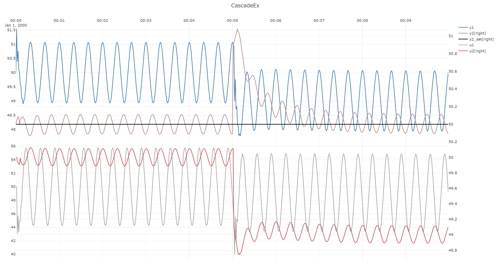

Cascade control
This example considers a cascade control scheme consisting of a rapid inner loop(process1 and pid)
and a slower outer loop(process2 and pid2), both being subjected to simulated disturbances.
(In a real-world case, the inner loop of a cascade is often a (rapid) valve flow-rate controller,
while the outer loop could for instance be a level that depends on the flow rate.)

A sinusoidal disturbance D1 is introduced on process1, wheras a step disturbance is introduced halfway through
the simulation in D2, and the aim is for the cascade controllers to reject both disturbances as well as possible.
The code to implement the controllers:
var processParameters1 = new UnitParameters
{
WasAbleToIdentify = true,
TimeConstant_s = 2,//rapid
LinearGains = new double[] { 1.1 },
U0 = new double[] { 50 },
TimeDelay_s = 0,
Bias = 50
};
var processParameters2 = new UnitParameters
{
WasAbleToIdentify = true,
TimeConstant_s = 30,//slow
LinearGains = new double[] { 1 },
U0 = new double[] { 50 },
TimeDelay_s = 5,
Bias = 50
};
var pidParameters1 = new PidParameters()
{
Kp = 3,
Ti_s = 2 //rapid
};
var pidParameters2 = new PidParameters()
{
Kp = 1,
Ti_s = 40 //slow
};
var process1
= new UnitModel(processParameters1, timeBase_s, "Process1");
var process2
= new UnitModel(processParameters2, timeBase_s, "Process2");
var pid1 = new PidModel(pidParameters1, timeBase_s, "PID1");
var pid2 = new PidModel(pidParameters2, timeBase_s, "PID2");
var sim = new PlantSimulator(timeBase_s,
new List<ISimulatableModel> { process1, process2, pid1, pid2 });
// pid1.SetManualOutput(50);
// pid1.SetToManualMode();
// pid2.SetManualOutput(50);
// pid2.SetToManualMode();
sim.ConnectModels(process1, process2);
sim.ConnectModels(process1, pid1);
sim.ConnectModels(pid1, process1);
sim.ConnectModels(process2, pid2);
sim.ConnectModels(pid2, pid1,(int)PidModelInputsIdx.Y_setpoint);
sim.AddSignal(pid2,SignalType.Setpoint_Yset,TimeSeriesCreator.Constant(50, N));
sim.AddSignal(process1,SignalType.Disturbance_D,TimeSeriesCreator.Sinus(5,20,timeBase_s,N));
sim.AddSignal(process2,SignalType.Disturbance_D,TimeSeriesCreator.Step(300, N, 0, 1));
var isOK = sim.Simulate(out var simResult);
Plot.FromList(new List<double[]>
{
simResult.GetValues(process1.GetID(),SignalType.Output_Y_sim),
simResult.GetValues(process2.GetID(),SignalType.Output_Y_sim),
simResult.GetValues(pid2.GetID(),SignalType.Setpoint_Yset),
simResult.GetValues(pid1.GetID(),SignalType.PID_U),
simResult.GetValues(pid2.GetID(),SignalType.PID_U)
},
new List<string> { "y1=y1", "y2=y2[right]","y2=y2_set[right]", "y3=u1", "y4=u2[right]" },
timeBase_s, "CascadeEx");
The resulting results.

To observe the open-loop behavior of the system for the same disturbances but with both controllers in manual mode, comment in the code lines:
pid1.SetManualOutput(50);
pid1.SetToManualMode();
pid2.SetManualOutput(50);
pid2.SetToManualMode();
The resulting open-loop simulation results:

These simualtions show the benefits of the cascade control over open-loop:
- transients in
y2of+/-0.5, are reduced to approximiately+/-0.1, and - the step disturbance in
y2is rejected.
Note
There are slight "bumps" in both the open-loop and closed-loop cases above.
This is because the simulations by design start in steady-state, whereas for the rest of the simulation the
entire process is in never-ending transient state because of the sinusoidal disturbance on y1.
Thus this bump is unavoidable, therefore in cases such as this, models should only be evaluated after a run-in-time.